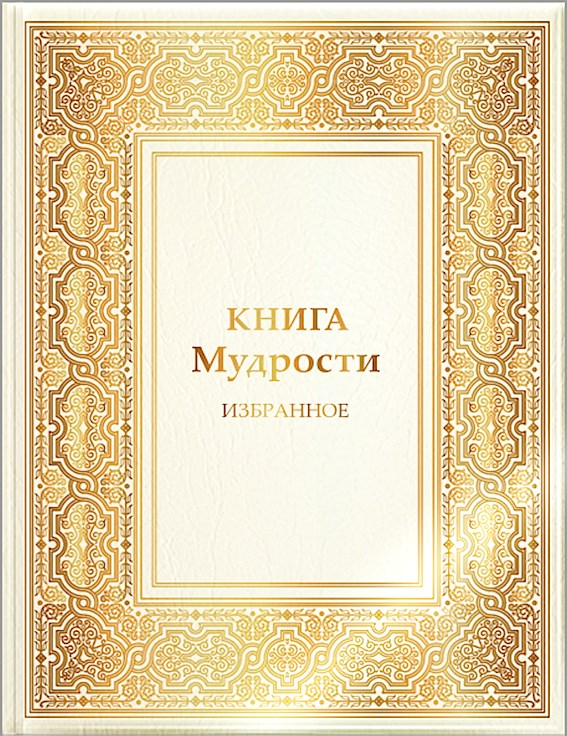

|
Elektroniskā grāmata
GV1(03.2005. - 06.2005.) |
SAITES:
|
kanāls
Sirius LV |
|
Elektroniskā grāmata
GV1(03.2005. - 06.2005.) |
SAITES:
|
kanāls
Sirius LV |
|
Šajā vietnē ir Dievišķo Gudrības Valdoņu vēstījumu tulkojumi. Vēstījumi cilvēcei doti ar Lielās Baltās Brālības Sūtnes Tatjanas Mikušinas starpniecību un |
|
Dārgie draugi, esiet sveicināti interneta vietnē "Sirius" («Сириус»)! Vietnes "Sirius" («Сириус») galvenais saturs ir  Diktāti jeb Vēstījumi, ko esmu pieņēmusi 16 gadu laikā no 2005. līdz 2021. gadam. Šajā laikā esmu pieņēmusi vairāk nekā 500 Vēstījumus no vairāk nekā 50 Gaismas Būtnēm. Šīs būtnes mīt Augstākās Esamības plānos, un viņu sūtība ir palīdzēt cilvēcei tās evolūcijā. Vēstījumi tiek doti sarunu formā. Kopumā visi Vēstījumi satur harmonisku, viengabalainu, saskanīgu Mācību, kuras pamatā ir Tikumības likums. Gaismas būtnes metodiski izskaidro un pierāda mums – iemiesojumā esošajiem cilvēkiem, kāpēc ir izdevīgi ievērot tikumiskos principus savā dzīvē, tālab tiek dotas zināšanas par diviem svarīgākajiem likumiem: Karmas likumu un Reinkarnācijas likumu. Mūsdienu sabiedrībā valdošā ir patērētāju sabiedrības ideoloģija, šajā sabiedrībā tiek kultivētas vēlmes, un tiek radīti apstākļi to apmierināšanai. Varu pārņēmusi nauda un dzīšanās pēc baudām. Vēstījumos loģiski un secīgi, soli pēc soļa tiek izskaidroti jaunās ideoloģijas principi, kas balstās Mīlestībā un ticībā, godīgumā un patiesīgumā, atsakoties no zemiskām vēlmēm un nekvalitatīviem apziņas stāvokļiem, balstoties brālības un kolektīvisma sajūtā, rūpēs par tuvāko un visu Dzīvību uz Zemes. Secīga vēstījumu lasīšana katru dienu tādā hronoloģiskā kārtībā, kā tie tika doti, maina lasītāja apziņu. Pakāpeniski, mainoties apziņai, mainās arī mūsu apkārtējā realitāte. Viens no Mācības galvenajiem postulātiem: ārējā pasaule ir spogulis, kurā atspoguļojas mūsu apziņa. Pilnīgai apziņai atbilst pilnīga pasaule. Lai jaunā ideoloģija kļūtu par valdošo pasaulē, ir vajadzīgs, lai 1 procents no zemeslodes iedzīvotāju brīvprātīgi nolemtu mainīt savu apziņu, paaugstināt savu apziņu jaunā evolucionārā līmenī. Pirms uzsākt Vēstījumu lasīšanu, ir nepieciešams iepazīt lasīšanas noteikumus sadaļā Gudrības Valdoņu rekomendācijas Vēstījumu lasīšanai. Turklāt Vēstījumu lasīšanai tiek ieteikts ikdienas garīgais darbs ar sevi un savām nepilnībām. Garīgā darba palīdzībai radīti Rozāriji, filmas, ko var iepazīt atbilstošās vietnes sadaļās. Kopš 2008. g. vietnē «Сириус» (Sirius) notiek Rozāriju iknedēļas audio translācija svētdienās plkst. 15:00 pēc Maskavas laika. Informācija par translāciju tiek ievietota sadaļā Воскресные интернет-трансляции" ("Svētdienas interneta translācijas"). Lai veicinātu garīgo attīstību, radītas vietnes «Университет Этики Жизни», (Dzīves ētikas universitāte) un «Классы на основе Учения Владык Мудрости» (Gudrības Valdoņu Mācības klases). Vietne «Сириус» (Sirius) nosūta bezmaksas sūtījumus. Pierakstīties sūtījumu saņemšanai iespējams šeit. Vēlu Jums veiksmi Garīgajā Ceļā! Tatjana Mikušina P.S. Jūsu zināšanai paziņoju, ka man nav skolnieku, un es nevienam neesmu uzticējusi pārstāvēt šo Mācību pēc manas nāves. |
|
Visi Gudrības Valdoņu Mācības Vēstījumi, ko Lielās Baltās Brālības Sūtne GUDRĪBAS VĀRDS 2 (5.08.2005. – 10.01.2008.) - 2,1 Mb GUDRĪBAS VĀRDS 3 (13.03.2008.– 26.06.2011.) - 2,05 Mb GUDRĪBAS VĀRDS 4 (27.12.2011.– 20.06.2021.) - 1,25 Mb |
|
|
|
YouTube kanāls „Sirius LV” latviešu valodā!
YouTube kanālā „Sirius LV” tiek pārpublicēti videoieraksti no YouTube Tatjanas Mikušinas „Sirius” kanāla vietnes, kurā ir skatāmi 47 videoklipi - grāmatu apraksti u.c. (КНИГИ) Domubiedru grupa pārpublicē dažādus videoierakstus: Tatjanas Mikušinas pieņemtos vēstījumus, Tatjanas Mikušinas grāmatu aprakstus, intervijas, u. c. Šie minētie video materiāli tiek pārtulkoti un sagatavoti lasīšanai latviešu valodā, papildinot videoierakstus ar subtitriem. |
IEPRIEKŠĒJIE VEBINĀRI
Sūtnes un Mācības atzinums
Sakarā ar jaunu ugunsgrēku Sūtnes mājā (vebinārs 2018. gada 17. martā krievu valodā)
IZVĒLES LAIKS
2018. gada Vebināri
vebinārs 2018. gada 24. martā (krievu val.)
K. Krasņikova un D. Mamajeva vebināru autori
Starptautiska sabiedriska kustība
"PAR TIKUMĪBU!"